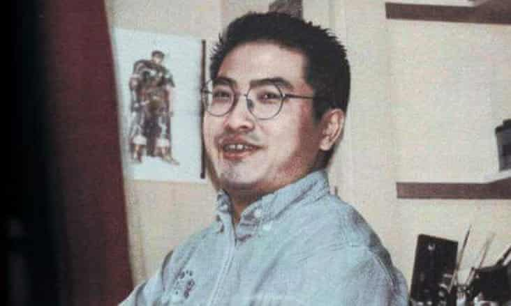

Kentaro Miura (三浦 建太郎, Miura Kentarō) (July 11, 1966 – May 6, 2021) was a Japanese manga artist. He was best known for his acclaimed dark fantasy manga Berserk, which began serialization in 1989 and continued until his death. As of 2021, Berserk had more than 50 million copies in circulation, making it one of the best-selling manga series of all time. In 2002, Miura received the Tezuka Osamu Cultural Prize.
Kentaro Miura
Creator of the most influential manga of all time "Berserk"

1985–2021